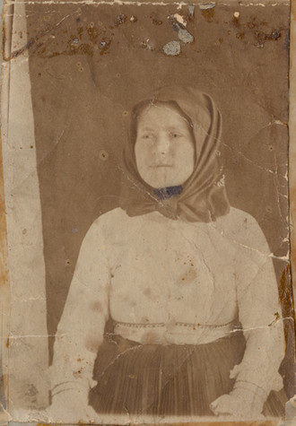

We are the global resource for Warhol artworks and archival materials, and you’ll always see something different each time you visit the museum.
Andy Warhol, Crushed Campbell’s soup Can (Beef Noodle), 1962
Andy Warhol, Screen Test:Edie Sedgwick [ST308], 1965
Andy Warhol, Jean-Michel Basquiat, ca, 1982
Andy Warhol, Flowers, 1964
Andy Warhol, Do It yourself(Sailboats), 1962
Andy Warhol, Empire, 1964
Our art collection includes 900 paintings; approximately 100 sculptures; nearly 2,000 works on paper; more than 1,000 published and unique prints; 4,000 photographs; 60 feature films; 200 Screen Tests; and more than 4,000 videos. The collection also features Warhol wallpaper and books.
Some of the most notable artworks include 1960s pop art paintings of consumer products, including Campbell’s Soup Cans and Coke, and celebrities portraits of stars like Elizabeth Taylor, Jackie Kennedy, Marilyn Monroe, and Elvis Presley; 1970s series, such as Death and Disaster, Mao, and abstract Oxidations; and works from the 1980s, including The Last Supper and collaborative paintings made with younger artists, such as Jean-Michel Basquiat and Francesco Clemente.
From the time he obtained his first film camera in 1963 until his death in 1987, Warhol actively explored the moving image, creating films, personal portraits, programs for cable television, and music videos. Among the films and videos in the collection are Warhol’s Empire, The Chelsea Girls, and Sleep, as well as video diaries, experimental soap operas, music videos, commercial work-for-hire, and all completed episodes of the television series Fashion, Andy Warhol’s T.V., and Andy Warhol’s Fifteen Minutes.
Drawings made by Warhol’s mother, Julia Warhola, are also included in the art collection.
Andy Warhol’s passport issued, 1965, 1965
Unknown, Shirley Temple, 1941
Andy Warhol, Mags, 1954-1973, Bulk: 1972-1973
Julia Zavacky Warhola in a photograph made for her passport, 1920
Lindy Made Easy (with Charleston) and Sex Facts for Men, 1962
Andy Warhol, Acetate (Mao), ca. 1972
The archives are part of Warhol’s life work and the greatest single collection of ephemera documenting the diverse worlds in which Warhol was active. The collection consists of perhaps half a million objects, and it tells Warhol’s story alongside the art collection.
The archives collection includes scrapbooks; press clippings; art supplies; source material; posters publicizing exhibitions and films; about 4,000 audio tapes of conversations between Warhol and his associates; thousands of documentary photographs; a nearly complete run of Interview magazine; his extensive library; hundreds of decorative art objects; and many personal items, such as correspondence, diaries, clothing, wigs, and cosmetics.
The keystone of the archives collection is Warhol’s largest serial artwork, the Time Capsules. Beginning in 1974, Warhol filled 569 standard-sized cardboard boxes, 40 filing cabinet drawers, and a large steamer trunk with materials spanning a nearly forty-year period, from the 1950s to his death in 1987, which he then sealed and sent to storage. Warhol used these boxes to manage the bewildering quantity of material that routinely passed through his life. Photographs, newspapers, and magazines; fan letters, business, and personal correspondence; artwork; source images; books, exhibition catalogues, and telephone messages; dinner invitations and poetry reading announcements; and ephemera were placed on an almost daily basis into a box kept conveniently next to his desk.